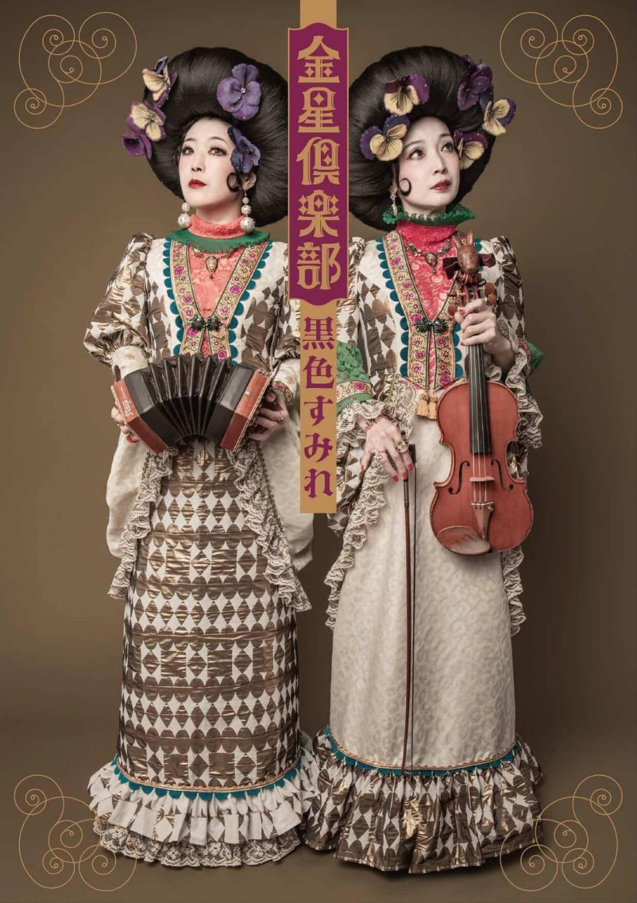

終了
cafe nora 主催
2026年6月14日
蜂鳥あみ太＝４号
日本凱旋TOUR
📍 cafe nora（愛媛県新居浜市）
#蜂鳥あみ太 #シャンソン #日本凱旋TOUR #新居浜 #cafenora
思い出アーカイブ
お店で開催したライブも、
外に出かけた出店の記録も。
お客様との笑顔、音楽、会話、
すべてここに残していきます。
📍 cafe nora（愛媛県新居浜市）
#蜂鳥あみ太 #シャンソン #日本凱旋TOUR #新居浜 #cafenora

📍 cafe nora（愛媛県新居浜市）
ゆか（Vocal / Piano / Accordion）
とさち（Violin）によるネオクラシックデュオ。
大変盛り上がりました！
たくさんのご来場ありがとうございました。
写真・動画は後日アップします。
#黒色すみれ #金星倶楽部 #ネオクラシック #新居浜 #大盛況

📍 cafe nora（愛媛県新居浜市）
Summer Sonic出演・NHK楽曲提供・
結成22年のZAHATORTEをお迎えした一夜。
素敵な夜を過ごすことができました。
観客の皆さんも余韻に浸っていて、
音楽の力を改めて感じた夜でした。
動画・写真は後日アップします。
#ZAHATORTE #ライブ #新居浜 #素敵な夜 #余韻

📍 mago おおひがし（古民家）
初めての出店でしたが、とても楽しかったです。
ゆったりと終日お過ごしになるお客様もいて、
会話もたくさんさせていただいて、
とてもアットホームな雰囲気でした。
古民家の雰囲気も大変素敵で、
いらっしゃるお客様もオーナーさんも
皆さん素敵でした！
#古民家 #初出店 #アットホーム #また行きたい

📍 mago おおひがし（古民家）
観客も巻き込んで、
笑いあり・涙あり（？笑）の大盛況！
cafe noraはカレーとドリンクを
提供させていただいて、
とても楽しい時間を
一緒に過ごさせていただきました。
オーナーさんと
「来年もここで！」と大盛り上がり。
絶対また来ます！
#りょーちん #笑いあり涙あり #カレー #来年も #大盛況
「全身網タイツの地獄のシャンソン歌手」が
オーストラリア凱旋直後、cafe noraに降臨。
たくさんのご来場ありがとうございました。
写真・ライブ詳細は後日アップ予定です。